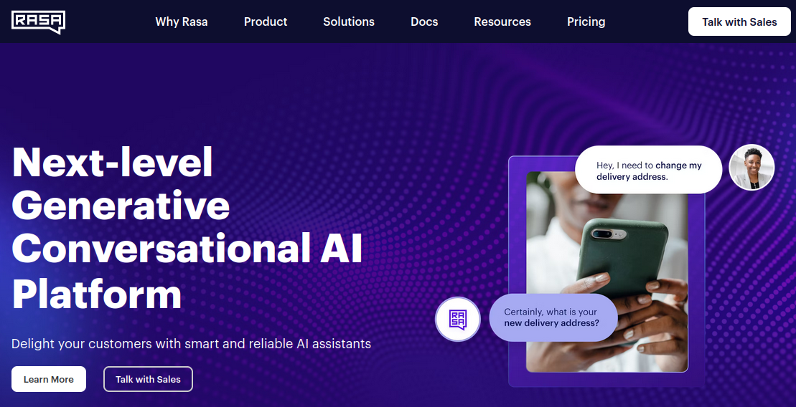

Welcome to Lab #09. This lab, we'll continue with NLP and learn how to build a Text Mining system with spaCy's matcher for rule-based named entity (NE) extraction. On the Chatbot front, you'll learn how to build an industry-strength bot using the Rasa framework.

Following are some sample scripts for last lab's questions:
Task #1: Here is a sample script for the spaCy exercise.
Task #2: Here's some example code for question classification with machine learning using linguistic features extracted with spaCy NLP.
The aim for this week is to build a basic Text Mining (TM) system. Text mining represents the broader discipline of deriving structured information from unstructured text. This process involves converting natural language documents into analyzable data, which could be formatted for various uses such as CSV exports, database integration, or knowledge graph development. Within this domain, Information Extraction (IE) is a major application, targeting the extraction of specific data points like named entities, connections, and significant occurrences from texts.
IE's practical applications are vast and varied, serving critical roles across multiple sectors. In business intelligence, it helps uncover market trends from customer feedback; in software development, it enhances bug report analysis with precision; and in healthcare, it facilitates the extraction of key information from patient records. By efficiently parsing through text data to identify relevant information, techniques learned in TM and IE equip you with the skills to tackle real-world challenges, such as analyzing social media sentiment, uncovering financial indicators from news articles, or spotting trends in scientific research.
As mentioned in the lecture, spaCy's models come equipped with a default pipeline that you can then modify and extend. Remember that in this context, a "pipeline" refers to a sequence of processing steps through which text data is passed, each step applying a different layer of analysis or transformation, starting from raw text to the extraction of structured information. Start by exploring the spaCy Pipelines documentation to understand the components that are executed in a default pipeline. You can view the default pipeline with the following code snippet:
print(nlp.pipe_names)
Now, let's try adding a simple custom component to the pipeline to count the number of title-cased tokens within a text and print them out in the console:
import spacy
from spacy.language import Language
@Language.component("custom_title_counter")
def custom_title_counter(doc):
title_count = sum(1 for token in doc if token.is_title)
print(f"This document has {title_count} title-cased tokens.")
return doc
Once you've created your pipeline component to perform the desired function, add it to your nlp pipeline as the last module.
Print the pipeline components in your console to ensure your custom component is added to the nlp pipeline. Then, process the following paragraph with your new pipeline and observe the output of your custom component:
text = """Concordia University (French: Université Concordia; commonly referred to as Concordia) is a public comprehensive research university located in Montreal, Quebec, Canada. Founded in 1974 following the merger of Loyola College and Sir George Williams University, Concordia is one of the three universities in Quebec where English is the primary language of instruction (the others being McGill University and Bishops University). As of the 2018–19 academic year, there were 46,829 students enrolled in credit courses at Concordia, making the university among the largest in Canada by enrollment. The university has two campuses, set approximately 7 kilometres (4 miles) apart: Sir George Williams Campus is the main campus, located in Downtown Montreal in an area known as Quartier Concordia; and Loyola Campus in the residential district of Notre-Dame-de-Grâce. """
The next step involves adding an information extraction component to our pipeline, focusing initially on extracting named entities (NEs). Similar to the entities extracted using the default model, we can approach NE extraction through (1) machine learning or (2) a rule-based system. Although machine learning often yields more accurate results, rule-based systems offer significant value in early-stage experiments, demo development, prototyping, and the creation of manual annotations required for machine learning. For certain predictable entities like URLs, IP addresses, and phone numbers, rule-based identification is straightforward and avoids the unnecessary complexity of machine learning approaches.
Our initial experiments will center on developing a rule-based IE system. Contrary to relying solely on regular expressions for text matching, we aim to craft more generalized rules by leveraging features extracted by previous components, such as lemmas and POS tags, that we've examined in the previous lab.
Begin by exploring the spaCy documentation for rule-based matching: Your objective is to devise rules capable of identifying organizational units within a university, such as faculties or departments, as they appear on websites or in scientific publications. Instead of rigidly matching every possible name combination (e.g., "Department of Mathematics and Computer Science" or "Faculty for Extraterrestrial Space Travel"), your rules should dynamically combine unit names ("Faculty", "Department", "School", ...) with POS tags, particularly nouns. To find applicable POS tags, refer to the documention of the model you're using, like en_core_web_sm used here.
After forming some preliminary rules, test them with the interactive Rule-based Matcher Explorer introduced in the lecture.
Following the exploration, let's implement these rules in Python:
import spacy
from spacy.matcher import Matcher
nlp = spacy.load("en_core_web_sm")
matcher = Matcher(nlp.vocab)
Translate the pattern you've refined in the Rule-based Matcher Explorer into the following code snippet:
pattern = #Pattern from Rule-based Matcher Explorer
Add your pattern and a corresponding label to the matcher object:
matcher.add("UNI_IDENTIFIER", [pattern])
With your nlp pipeline ready, process the specified text. Then, extract and print the matches identified by your pattern:
doc = nlp(text) # Ensure you've defined the 'text' variable with your target text
matches = matcher(doc)
for match_id, start, end in matches:
string_id = nlp.vocab.strings[match_id] # String representation
span = doc[start:end] # Matched span
print("Match found:", string_id, span.text, "at positions:", start, end)
Assess the outcomes from your Python code against those from the Matcher Explorer. Experiment with varying patterns to refine your entity extraction capabilities.
Having developed a rule-based information extraction component, our next step is to integrate this matcher into the spaCy processing pipeline. This integration allows for seamless processing of documents, where named entities are identified automatically as part of the pipeline's workflow. Such a setup mirrors real-world text mining systems, such as the EMM NewsExplorer and MEDISYS systems you've seen in the lecture, which continuously process incoming documents to extract new information and present them through a web interface.
The inclusion of our matcher into the pipeline not only streamlines the extraction process but also sets the stage for scalable text mining solutions.
Here's how to integrate your custom matcher into the pipeline:
from spacy.language import Language
@Language.factory("custom_matcher")
def create_matcher(nlp, name):
matcher = Matcher(nlp.vocab)
# Add patterns that were effective in the Rule-based Matcher Explorer
matcher.add("uni_identifier", [pattern])
return matcher
nlp.add_pipe("custom_matcher", last=True)
This code snippet registers your matcher as a component in the pipeline, making it an integral part of document processing. Now, to apply this enhanced pipeline across multiple documents.
Let’s automate the process of reading documents from a directory, applying our pipeline, and capturing the detected entities. This mirrors the functionality of extensive text mining systems, which must handle large datasets efficiently.
Below is a simple program outline for performing these tasks, culminating in the output of detected entities alongside their corresponding document filenames into a CSV file:
import spacy
import csv
import os
nlp = spacy.load("en_core_web_sm") # Load the model and your custom pipeline
nlp.add_pipe("custom_matcher", last=True)
directory_path = 'path/to/your/documents'
csv_file = open('detected_entities.csv', 'w', newline='')
csv_writer = csv.writer(csv_file)
csv_writer.writerow(["Document Name", "Entities"])
for filename in os.listdir(directory_path):
if filename.endswith(".txt"):
doc = nlp(open(os.path.join(directory_path, filename), 'r').read())
entities = [ent.text for ent in doc.ents]
csv_writer.writerow([filename, ', '.join(entities)])
csv_file.close()
This program processes each document in the specified directory, leveraging your enhanced pipeline to detect entities. By writing out the results to a CSV file, we get a tangible example of how text mining can be applied in a scalable, real-world context; similarly, you could export them to a database or, with further processing, into a knowledge graph.
Incorporating the matcher into your pipeline is your first step towards building real-world text mining systems. Think of it as setting up your own mini version of big-league operations, but with the agility to tailor it to specific needs. By extracting entities like company names for market analysis, geographical locations for mapping news events, or even product names from customer reviews, you're laying the groundwork for a variety of applications. These entities could feed into a database for real-time analytics, helping businesses understand market movements or consumer trends.
After exploring the fundamentals of chatbots in the previous labs, including pattern matching with AIML and implementing an IR-based bot using tf-idf and cosine similarity, it's time to advance our toolkit. Our focus now shifts to constructing a chatbot capable of standing its ground in the real world, employing the sophisticated technologies provided by Rasa.
Transitioning from simpler chatbot technologies to Rasa opens up a realm of possibilities. Rasa is an open-source machine learning framework, designed specifically for building conversational AI. It differs from previous tools by offering a more nuanced understanding of user inputs and managing dialogues in a way that mimics human conversation closely. This enhancement allows for the creation of chatbots that can handle complex conversations, learn from interactions, and integrate seamlessly with various messaging platforms.
Rasa's ecosystem comprises two major components:
One of Rasa’s key advantages is its flexibility and extensibility, which make it suitable for everything from simple Q&A bots to sophisticated virtual assistants capable of complex transactions. Its use spans various industries, from finance and healthcare to customer service and entertainment, showcasing its versatility.
Rasa is freely available under an open-source license, allowing for modification, distribution, and use in both commercial and non-commercial projects. For projects requiring advanced features or support, Rasa offers commercial services through Rasa Enterprise, which provides additional tools for deploying, scaling, and managing your chatbots.
For a deeper dive into Rasa and how to get started, visit their official documentation and check out their GitHub repository. There are many interesting articles about Rasa available online; here are two to get you started: Building chatbot with Rasa and spaCy and Create Chatbot using Rasa Part-1.
This session will guide you through utilizing Rasa to develop a chatbot that not only answers questions but can engage in meaningful dialogue, providing a significant leap forward from the capabilities of previous lab exercises. By the end of this task, you'll have a prototype ready to be refined into a deployable solution for a wide range of applications.
Let's now get our hands dirty with some technical work.
To install Rasa Open Source, it's recommended to use pip within a virtual environment. Rasa supports Python 3.7, 3.8, 3.9, and 3.10. Since Rasa's installation also includes TensorFlow, creating a virtual environment for your Rasa project is advisable to manage dependencies effectively:
Using Conda:
conda create -n rasa python=3.8
conda activate rasa
pip install rasa
Using Python VirtualEnv:
python3 -m venv rasa_env
source rasa_env/bin/activate
pip install rasa
After installing Rasa, you can initiate a new project and enter its interactive setup:
rasa init
If the installation was successful, you'll be prompted to choose a directory for your new project. You can specify a path or simply press enter to create the project in the current directory. Follow the interactive guide and keep pressing enter until you're prompted to test the chatbot in the console. Try typing "Hello" to see how the bot responds.
2024-03-24 17:28:06 INFO root - Rasa server is up and running. Bot loaded. Type a message and press enter (use '/stop' to exit): Your input -> Hi bot! Hey! How are you? Your input -> Great, it's another lab day! Great, carry on! Your input -> /stop
After exploring the initial chatbot functionality, let's dive deeper into the structure of a Rasa project. Navigate to the folder created during the rasa init step to find several important files crucial for your chatbot's development:
YAML (YAML Ain't Markup Language) is a human-readable data serialization format, used for configuration files and data exchange between languages, and .yml files are where this data is stored; you can check and validate your YAML syntax at YAMLChecker.
These files collectively form the backbone of your Rasa project, guiding the bot's understanding, decision-making process, and actions. By customizing and expanding these files, you'll enhance your bot's conversational abilities.
Let's create a custom action to provide information about a person. For a quick overview of the process, check out this YouTube video.
Step 1: Add a new intent named about_person to the nlu.yml file and include examples to trigger this intent. Ensure your additions match the syntax of existing intents:
- intent: about_person
examples: |
- Who is he?
- Who is [Joe](person) ?
- Who is [Kate](person)?
- Who is [Harry](person)
- Tell me about him
- Tell me about
- Tell me about [Peter](person)
- Tell me about [Joe](person)
- Can you tell me about him?
- Can you tell me about [Jane](person)?
- Can you tell me about [Peter](person) ?
- Can you tell me about [Jonathan](person) ?
- Do you know [Alice](person) ?
- Tell me about [Jack](person) ?
in the above given example, Tokens within the square brackets, like [Joe] [Peter], ..., are examples of what instance we are interested in extracting and variables within round brackets, like (person) are known as entities, which function similar to variables to contain the value a user inputs (e.g., person = "Joe").
Step 2: Update the domain.yml file to include the new about_person intent under the intents section.
Step 3: Register the person entity in the domain.yml file and define a slot of the same name to store this entity's value:
entities:
- person
slots:
person:
type: text
initial_value: "unknown"
mappings:
- type: from_entity
entity: person
Step 4: In the actions/actions.py file, define a custom action named action_person_info by modifying the default class template. This action will print a custom message about the person:
@rasa_sdk.Action
class ActionPersonInfo(rasa_sdk.Action):
def name(self):
return "action_person_info"
def run(self, dispatcher, tracker, domain):
person_name = tracker.get_slot('person')
message = f"If you're asking about {person_name}, Best Human Ever!!! ;-)"
dispatcher.utter_message(text=message)
return []
Step 5: Register your custom action in the domain.yml file under the actions section:
actions: - action_person_info
Step 6: Create a new story in data/stories.yml that includes the about_person intent and the action_person_info action:
- story: get person info
steps:
- intent: greet
- action: utter_greet
- intent: about_person
- action: action_person_info
Step 7: Enable the action server by uncommenting or adding the following lines in the endpoints.yml file:
action_endpoint: url: "http://localhost:5055/webhook"
Train your model, start the Rasa shell, and the action server in separate consoles (terminals). In the first console, run:
rasa train rasa shell
At the same, start the Rasa action server with the following command in the second console:
rasa run actions
Test your setup by asking "Who is Joe?" in the Rasa shell. You should receive a response like "If you're asking about Joe, Best Human Ever!!!"
Understanding the mechanics behind Rasa's handling of custom actions and its integration with spaCy illuminates how powerful and flexible conversational AI can become. When you run the rasa run actions command, you're essentially firing up a server dedicated to executing custom actions—like fetching data or processing user input beyond predefined responses.
Rasa leverages spaCy for various NLP tasks, including entity recognition and intent classification, which are critical for understanding user inputs. Under the hood, when a user message comes in, Rasa's NLU component uses spaCy models to parse the text and extract meaningful information such as intents and entities. This process involves tokenization, part-of-speech tagging, and dependency parsing, among others, to grasp the sentence structure and meaning.
In addition to spaCy, Rasa uses TensorFlow for building and training its machine learning models, particularly within the Rasa NLU and Rasa Core components. TensorFlow's flexibility and scalability allow Rasa to efficiently handle the training of models for intent classification and response prediction, enabling the bot to understand complex user queries and maintain coherent conversations. This deep learning framework plays a crucial role in processing the conversational data and learning from the interaction patterns defined in your training stories.
For the intents and entities recognized, Rasa consults the trained dialogue management model to decide on the next best action, which could be a custom action defined in your actions.py. This decision-making is informed by the stories you've provided, teaching Rasa how conversations typically flow. When a custom action is triggered, it executes the code you've written—be it querying a database, calling an API, or in our simple example, crafting a personalized message about "Joe".
The integration with spaCy and TensorFlow not only provides a robust foundation for language understanding and decision-making but also allows for the extension of Rasa's capabilities by utilizing custom spaCy models or adding spaCy components to the processing pipeline. This synergy enables developers to build sophisticated, scalable chatbots capable of handling real-world tasks and conversations.
One of the challenges in natural language processing, including entity extraction in chatbots, is dealing with Out-of-Vocabulary (OOV) words. These are words that the user might input which were not present in the training data, and therefore, the model does not recognize them. In Rasa, if an entity is an OOV word, the system might default to using a preset value defined in the domain.yml file under slots, potentially leading to incorrect interpretations or responses.
To mitigate this, Rasa offers several strategies, including the use of the CountVectorsFeaturizer component in your pipeline. This component can create dense vectors by considering the context of words, enabling the model to handle words it hasn't seen before more gracefully. It does this by breaking down sentences into known words and learning the context in which words appear. This context helps Rasa to make educated guesses about new words based on their similarity to known words in similar contexts.
Integrating OOV strategies requires adjusting your NLU model's pipeline configuration and possibly extending your training data to include a wider variety of examples. For a more detailed guide on configuring your Rasa model to better handle OOV words and to learn about the specific parameters and capabilities of the CountVectorsFeaturizer, visit the official documentation of the Rasa Components: CountVectorsFeaturizer.
By implementing these strategies, you can significantly improve your chatbot's understanding and handling of user inputs, making your bot more robust and user-friendly.
Building on the custom actions developed in Rasa, you now have the opportunity to leverage the rich data stored in your knowledge graph. By integrating with RDFlib and executing SPARQL queries against a Fuseki server that set up in previous labs, you can extract detailed information to enrich your chatbot's responses. To connect to the Fuseki server, utilize the Python requests library within your custom action. Ensure your Fuseki server is active and accessible.
In your custom action, you might craft a SPARQL query to fetch specific information based on the user's query. For instance, if a user asks about a person, the bot could retrieve biographical details, related projects, or recent publications from the knowledge graph. Here's a simplified example:
import requests
def run(self, dispatcher, tracker, domain):
person_name = tracker.get_slot('person')
query = """
PREFIX dbo: <http://dbpedia.org/ontology/>
SELECT ?description WHERE {
?person dbo:name '""" + person_name + """'@en .
?person dbo:abstract ?description .
FILTER (lang(?description) = 'en')
}
LIMIT 1
"""
response = requests.post('http://localhost:3030/dataset/query', data={'query': query})
description = response.json()['results']['bindings'][0]['description']['value']
dispatcher.utter_message(text=f"Here's what I found about {person_name}: {description}")
This integration enables your chatbot to not only fetch specific data points but also to contextualize and relay this information in a conversational manner. By processing SPARQL query results, your chatbot can construct responses that are both informative and engaging, turning raw data into meaningful dialogue.
Beyond knowledge graphs, consider how other AI and NLP techniques could enhance your chatbot. For example, integrating Information Retrieval (IR) systems could expand the bot's ability to handle broad queries by searching through extensive datasets. Similarly, incorporating Large Language Models (LLMs) could provide your chatbot with capabilities for generating more nuanced and varied responses, further enhancing the user experience.
To interact with your Rasa chatbot through a web interface, you will need to set up a channel that allows communication between the web frontend and your Rasa backend. While Rasa doesn't provide a built-in web interface, you can easily integrate one using the Rasa Webchat, a customizable chat widget. Here's a basic guide to get you started:
rasa run in your terminal.rasa run actions if your bot uses custom actions.socketUrl to point to your running Rasa server:<script>
!function(){
let e=document.createElement("script"),
t=document.head||document.getElementsByTagName("head")[0];
e.src="https://cdn.jsdelivr.net/npm/@botfront/rasa-webchat/lib/index.js",
e.async=!0,e.onload=()=>window.WebChat.default({customData:{language:"en"},
socketUrl:"http://localhost:5005",socketPath:"/socket.io/",title:"Your Chatbot Title",
subtitle:"Your Subtitle"},null),
t.insertBefore(e,t.firstChild)
}();
</script>
This script injects the Rasa Webchat widget into your webpage, enabling direct browser interaction with your Rasa chatbot. Adjust the socketUrl to your Rasa server's address and port for a seamless conversational experience on your site. For broader connectivity, explore integrating your bot with various messaging platforms like Slack or Facebook Messenger by consulting Rasa's messaging and voice channels documentation.
In this lab, you've taken initial steps toward building text mining systems and crafting chatbots ready for real-world application on company websites or social networks.
We've already talked about the rising importance of chatbots for customer communications in the previous labs. With Rasa, a framework adopted by companies like American Express, Dell, and Adobe, you now have the capability to develop chatbots aimed at enhancing customer service and engagement. More importantly, your learning journey through NLP, Information Retrieval (TF-IDF & cosine similarity), and Knowledge Graphs equips you with a diverse set of tools. This diversity allows you to select the most fitting approach—be it knowledge graphs for structured data, IR for content search, or NLP for understanding user queries—when designing solutions for various aspects of chatbot development.
As the landscape of AI evolves with the advent of Large Language Models (LLMs), you might wonder about the continued relevance of platforms like Rasa. Despite their impressive capabilities, LLMs often present challenges in producing verifiable results, ensuring trustworthiness, and adapting to company-specific data not encountered during their training. It's important to recognize that Rasa's flexibility in integrating with LLMs and other AI technologies ensures its ongoing significance. Rasa offers a structured framework for deploying conversational AI, integrating multiple techniques that LLMs alone cannot provide. One such approach is Retrieval-Augmented Generation (RAG), where the bot fetches structured data (e.g., from a database or knowledge graph) containing verified, possibly company-specific information and feeds this to an LLM to generate fluent responses based on this factual knowledge.
Reflecting on the significance of text mining, it's important to note that approximately 80-90% of organizational data is unstructured, predominantly text. This underlines the sheer volume of information text mining navigates. The global text analytics market, valued at US$ 6.5 billion in 2020, is on a trajectory to expand at a CAGR of 20.2% until 2028. This growth reflects text mining's critical role in transforming businesses and industries. For instance, knowledge workers, who allocate 19% of their time to information search and gathering, stand to benefit greatly from efficiencies driven by text mining technologies. Furthermore, the potential for cost savings and enhanced revenue is notable, with data-driven decisions boosting revenue by over 25% and reducing customer churn by up to 15% in some sectors. In healthcare, the annual savings attributed to text mining efficiencies could amount to $5 billion. These statistics aren't just numbers; they represent the real-world impact and opportunities that await you as you develop your text mining skills. Embracing text mining can significantly contribute to your ability to influence operational efficiencies, decision-making processes, and innovation across a range of industries. By identifying areas where data isn't fully leveraged—like customer feedback on social media—and quickly deploying a text mining prototype like you've learned to craft in this lab, you can uncover insights that lead to improved products or services, thereby enhancing your ability to drive strategic decisions and innovation within any organization.
That's all for this lab!